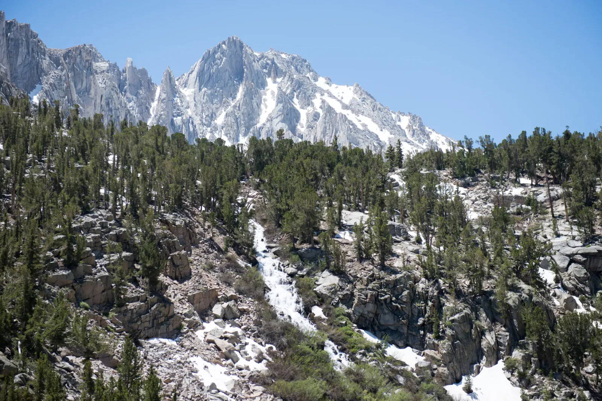

Range of Light
Independence Day in Independence, CA. I couldn't have written a better joke. The town sits on the floor of the Owens Valley, with the Sierra rising more than 10,000 feet behind it in about a dozen miles. After a huge winter, the range was still holding on to its snow. I spent the morning of the Fourth hiking up to a string of alpine lakes above town, each one ringed with pines and patches of white. The dog came along, red pack strapped on, and stood on every boulder with a view. After lunch I drove north to Big Pine Creek and set up camp in the canyon beneath tall red-barked Jeffrey pines, with a tiny wood-burning stove to cook on.
Friday was the main event. The crests above camp turned orange at first light, and I was on the North Fork trail a little after six. Big Pine Creek was loud from the first step, a whole winter of snow coming down at once! White water poured over granite and piled up against logs and boulders, with fresh green willows crowding the banks. Above the willows, snowfields still lay across the trail in July. Then the pines parted and Temple Crag appeared: a wall of dark, spired granite, one foot shy of 13,000 feet, with tongues of snow spilling down its flanks. First Lake sat at its foot, so shallow and clear that I could see every rounded stone on the bottom. The dog walked a fallen log and went for a swim, and I stayed a good while.

John Muir, whose name this wilderness carries, called the Sierra the Range of Light. At midday, with the sun bouncing off snow and pale granite and not a cloud in the sky, it was easy to see why. The snow becomes the creek, the creek runs out to the desert, and the granite follows, just on a much slower schedule. I followed all that roaring water back down the canyon, cascade after cascade, and reached the trailhead by late afternoon. I did it as a long day hike. Wilderness permits for sleeping up at the lakes go fast, so book early to see the ones higher up the basin.